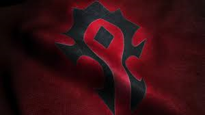
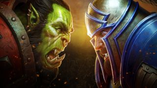
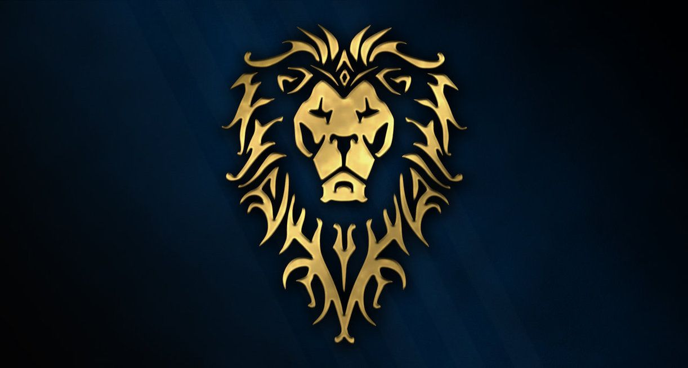
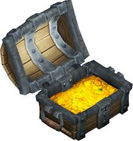

Welcome to World Of Warcraft!
아제로스에 오신것을 환영합니다.
MENU 접기/펼치기
오리지널
불타는 성전
리치왕의 분노
대격변
  
이 웹 페이지는 제가 가장 좋아했엇던 '월드 오브 워크래프트'라는 게임을 소개하는 페이지 입니다.
다만 모든 확장팩이 아닌 제가 클래식으로 플레이해본 '오리지널', 사촌형이 플레이 하던것을 지켜보기만 한 '불타는 성전'
그리고 제가 플레이 해본 '리치왕의 분노'와 '대격변' 확장팩까지만 다루었습니다.
